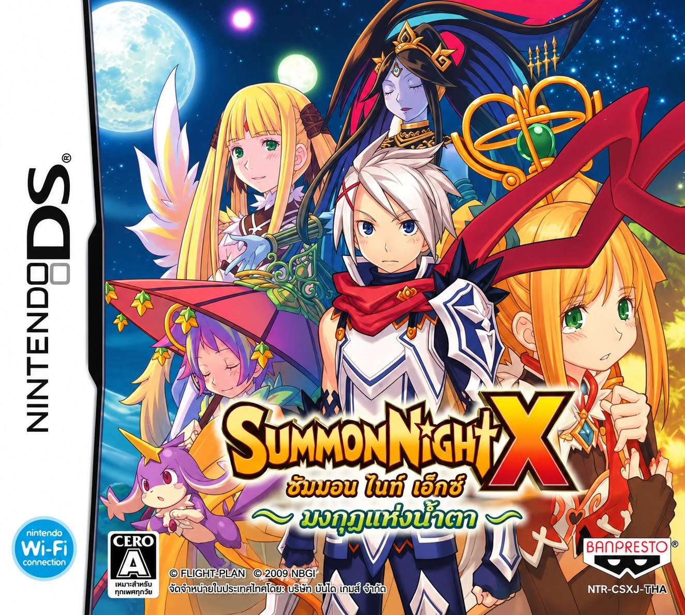

Summon Night X – Tears Crown
ซัมมอน ไนท์ เอ็กซ์ — มงกุฎแห่งน้ำตา · Nintendo DS · ภาษาไทย v1.0

เมื่อการแลกตัวประกันช่วยยุติสงครามระหว่างเซเลสเทียกับจักรวรรดิเดลเทียนา ดิลแลนและฟาราห์กลับต้องเผชิญวันที่สันติภาพเริ่มสั่นคลอน เลือกติดตามเรื่องราวผ่านสายตาของตัวเอกคนใดคนหนึ่ง ผูกมิตรกับเหล่าสัตว์อัญเชิญ และออกค้นหาว่าใครกำลังผลักทั้งสองดินแดนกลับเข้าสู่สงคราม
เกมใหม่ · ภาษาไทย v1.0 · แปลบางส่วน
แปลโดยเพจแปลเกมเก่า · บทนำ บทสนทนาและตัวเลือกบางช่วง เมนู และชื่อบนแผนที่ย่อ · เนื้อเรื่องยังแปลไม่ครบและยังไม่ได้ทดสอบเล่นจนจบ ทดสอบฉากเปิด เมนู และกดเล่นต่อจากเซฟเดิมของฟาราห์ใน melonDS
แปะแพตช์บนเว็บ
เลือกไฟล์ Summon Night X – Tears Crown (English v0.951) รหัส CS7J ขนาด 242,058,104 ไบต์ (.nds) ระบบจะตรวจไฟล์และสร้าง .nds ภาษาไทยในเครื่องของคุณ
เลือกไฟล์ .nds เพื่อเริ่ม
ดาวน์โหลด ROM ภาษาไทยSHA-256 สำหรับตรวจสอบไฟล์
ต้นฉบับ6235b01430391c94788d7ac166ebf7d814314b69329d9d0132a691d6722b5c81
ภาษาไทย80af4f731e93eeabd72044eae1f2c3b08c2955b18a7a3a5431c6fd02c88d7dd1